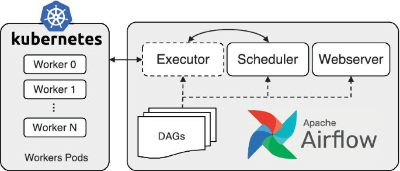
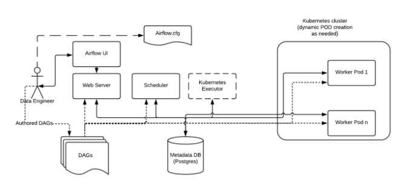
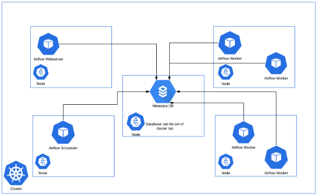
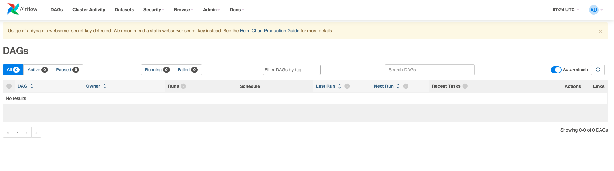
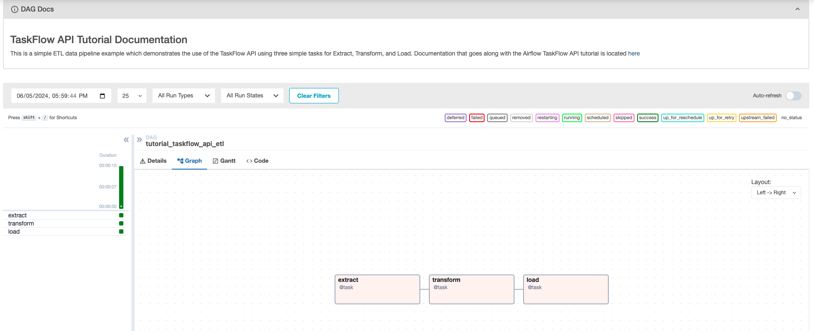

Deploying and Running Airflow on Kubernetes#

Quickstart about Kubernetes#
Kubernetes is a portable, extensible, open source platform for managing containerized workloads and services, that facilitates both declarative configuration and automation. It has a large, rapidly growing ecosystem. Kubernetes services, support, and tools are widely available.
We enter container deployments era. Containers are similar to VMs, but they have relaxed isolation properties to share the Operating System (OS) among the applications. Therefore, containers are considered lightweight. Similar to a VM, a container has its own filesystem, share of CPU, memory, process space, and more. As they are decoupled from the underlying infrastructure, they are portable across clouds and OS distributions.
Containers have become popular because they provide extra benefits, such as:
- Agile application creation and deployment: increased ease and efficiency of container image creation compared to VM image use.
- Continuous development, integration, and deployment: provides for reliable and frequent container image build and deployment with quick and efficient rollbacks (due to image immutability).
- Dev and Ops separation of concerns: create application container images at build/release time rather than deployment time, thereby decoupling applications from infrastructure.
- Observability: not only surfaces OS-level information and metrics, but also application health and other signals.
- Loosely coupled, distributed, elastic, liberated micro-services: applications are broken into smaller, independent pieces and can be deployed and managed dynamically – not a monolithic stack running on one big single-purpose machine.
- Resource isolation: predictable application performance.
- Resource utilization: high efficiency and density.
Why you need Kubernetes#
Containers are a good way to bundle and run your applications. In a production environment, you need to manage the containers that run the applications and ensure that there is no downtime.
Example
if a container goes down, another container needs to start. Wouldn't it be easier if this behavior was handled by a system?
What Kubernetes provides:
- Service discovery and load balancing
Kubernetes can expose a container using the DNS name or using their own IP address.
- Storage orchestration
Kubernetes allows developer to automatically mount any storage systems.
- Automated rollouts and rollbacks
Developer can describe the desired state for your deployed containers using Kubernetes, and it can change the actual state to the desired state at a controlled rate.
- Automatic bin packing
Developer provides Kubernetes with a cluster of nodes that it can use to run containerized tasks.
- Self-healing
Kubernetes restarts containers that fail, replaces containers, kills containers that don't respond to your user-defined health check, and doesn't advertise them to clients until they are ready to serve.\
- Secret and configuration management
Kubernetes lets developers store and manage sensitive information, such as passwords, OAuth tokens, and SSH keys.
- Batch execution
Kubernetes can manage your batch and CI workloads, replacing containers that fail, if desired.
- Horizontal scaling
Scale your application up and down with a simple command, with a UI, or automatically based on CPU usage.
- Designed for extensibility
Add features to your Kubernetes cluster without changing upstream source code.
Info
Kubernetes is also equipped with kubectl as its CLI command.
It provides a tool to communicate with a Kubernetes cluster's control plane, using Kubernetes API.
Airflow: Kubernetes Executor#
The Kubernetes executor runs each task instance in its own pod on a Kubernetes cluster.
KubernetesExecutor runs as a process in the Airflow Scheduler. The scheduler itself does not necessarily need to be running on Kubernetes, but does need access to a Kubernetes cluster.
KubernetesExecutor requires a non-sqlite database in the backend.
When a DAG submits a task, the KubernetesExecutor requests a worker pod from the Kubernetes API. The worker pod then runs the task, reports the result, and terminates.

This is an example of an Airflow deployment running on a distributed set of Kubernetes nodes and clusters.

Consistent with the regular Airflow architecture, the Workers need access to the DAG files to execute the tasks within those DAGs and interact with the Metadata repository. Also, configuration information specific to the Kubernetes Executor, such as the worker namespace and image information, needs to be specified in the Airflow Configuration file.
Advantages#
- In contrast to CeleryExecutor, KubernetesExecutor does not require additional components such as Redis, but does require access to Kubernetes cluster.
- Monitoring Pods can be done with the built-in Kubernetes monitoring.
- With KubernetesExecutor, each task runs in its own pod. The pod is created when the task is queued, and terminates when the task completes.
- Resource utilization for each task doesn't need to be worried, because they will spawn each different pods and independent.
Tip
In scenarios, such as burstable workloads, this presented a resource utilization advantage over CeleryExecutor, where you needed a fixed number of long-running Celery worker pods, whether or not there were tasks to run.
Disadvantages#
- Deploying using Kubernetes is very high learning curve to understand completely Kubernetes and you need to pay attention to every detail if you want to deploy it through Production. It's relatively quite complex.
- with KubernetesExecutor, you will have more task latency because worker pod is triggered when Airflow trigger the task, it's not ready yet, it will take time to create the Pods.
Deploying Airflow on Kubernetes#
Warning
This setup is only working on MacOS currently (at this point of time), I will try to develop it in other OS in near future
you will need to install:
- First, you need to clone the repo
- run below command to install the prerequisites, such as: Docker, KinD, Kubectl
Output:
➜ airflow-k8s git:(master) ✗ make init
bash scripts/init.sh
Installing Kubectl, KinD, Helm, docker and docker compose ...
==> Downloading https://formulae.brew.sh/api/formula.jws.json
###################################################################################################################################################################################################################################### 100.0%
==> Downloading https://formulae.brew.sh/api/cask.jws.json
###################################################################################################################################################################################################################################### 100.0%
Warning: kubernetes-cli 1.30.1 is already installed and up-to-date.
To reinstall 1.30.1, run:
brew reinstall kubernetes-cli
Warning: kind 0.23.0 is already installed and up-to-date.
To reinstall 0.23.0, run:
brew reinstall kind
Warning: helm 3.15.1 is already installed and up-to-date.
To reinstall 3.15.1, run:
brew reinstall helm
Warning: Treating docker as a formula. For the cask, use homebrew/cask/docker or specify the `--cask` flag.
Warning: docker 26.1.3 is already installed and up-to-date.
To reinstall 26.1.3, run:
brew reinstall docker
Warning: docker-compose 2.27.1 is already installed and up-to-date.
To reinstall 2.27.1, run:
brew reinstall docker-compose
It's ready, you can proceed to install Airflow
- create Kubernetes cluster by running below command
Output:
➜ airflow-k8s git:(master) ✗ make cluster
bash scripts/cluster.sh
you will create kubernetes cluster and check it ...
Creating cluster "airflow-cluster" ...
✓ Ensuring node image (kindest/node:v1.30.0) 🖼
✓ Preparing nodes 📦 📦 📦 📦
✓ Writing configuration 📜
✓ Starting control-plane 🕹️
✓ Installing CNI 🔌
✓ Installing StorageClass 💾
✓ Joining worker nodes 🚜
Set kubectl context to "kind-airflow-cluster"
You can now use your cluster with:
kubectl cluster-info --context kind-airflow-cluster
Not sure what to do next? 😅 Check out https://kind.sigs.k8s.io/docs/user/quick-start/
Cluster info
Kubernetes control plane is running at https://127.0.0.1:50484
CoreDNS is running at https://127.0.0.1:50484/api/v1/namespaces/kube-system/services/kube-dns:dns/proxy
To further debug and diagnose cluster problems, use 'kubectl cluster-info dump'.
Nodes info
NAME STATUS ROLES AGE VERSION INTERNAL-IP EXTERNAL-IP OS-IMAGE KERNEL-VERSION CONTAINER-RUNTIME
airflow-cluster-control-plane Ready control-plane 21s v1.30.0 172.18.0.5 <none> Debian GNU/Linux 12 (bookworm) 6.6.26-linuxkit containerd://1.7.15
airflow-cluster-worker NotReady <none> 1s v1.30.0 172.18.0.3 <none> Debian GNU/Linux 12 (bookworm) 6.6.26-linuxkit containerd://1.7.15
airflow-cluster-worker2 NotReady <none> 1s v1.30.0 172.18.0.4 <none> Debian GNU/Linux 12 (bookworm) 6.6.26-linuxkit containerd://1.7.15
airflow-cluster-worker3 NotReady <none> 1s v1.30.0 172.18.0.2 <none> Debian GNU/Linux 12 (bookworm) 6.6.26-linuxkit containerd://1.7.15
- Create a Kubernetes namespace, run below command
Output:
➜ airflow-k8s git:(master) ✗ make ns
bash scripts/namespace.sh
Creating kubernetes namespace Airflow ...
namespace/airflow created
NAME STATUS AGE
airflow Active 0s
default Active 57m
kube-node-lease Active 57m
kube-public Active 57m
kube-system Active 57m
local-path-storage Active 57m
- Fetch airflow chart from Helm repository
Output:
➜ airflow-k8s git:(master) ✗ make fetch
Fetching airflow from Helm chart
"apache-airflow" already exists with the same configuration, skipping
Hang tight while we grab the latest from your chart repositories...
...Successfully got an update from the "apache-airflow" chart repository
Update Complete. ⎈Happy Helming!⎈
NAME CHART VERSION APP VERSION DESCRIPTION
apache-airflow/airflow 1.13.1 2.8.3 The official Helm chart to deploy Apache Airflo...
- Install airflow Helm chart on Kubernetes cluster, this will take around 5 minutes.
to check if all the Airflow pods are already running
Output:
NAME READY STATUS RESTARTS AGE
airflow-k8-postgresql-0 1/1 Running 0 99s
airflow-k8-redis-0 1/1 Running 0 99s
airflow-k8-scheduler-d85d89786-6dtml 2/2 Running 0 99s
airflow-k8-statsd-54b54565c9-xqjgk 1/1 Running 0 99s
airflow-k8-triggerer-0 2/2 Running 0 99s
airflow-k8-webserver-688d4cdb74-6949c 1/1 Running 0 99s
airflow-k8-worker-0 2/2 Running 0 99s
since you have forwarded the port to localhost, you will be able to see the Airflow UI through http://localhost:8080

- By default, airflow will still run
CeleryExecutor, you can change toKubernetesExecutorto run natively on Kubernetes and get more benefits of it.
# Run this to get and generate values.yaml file
helm show values apache-airflow/airflow > values.yaml
Open it and change the executor setting
# Airflow executor
# One of: LocalExecutor, LocalKubernetesExecutor, CeleryExecutor, KubernetesExecutor, CeleryKubernetesExecutor
executor: "KubernetesExecutor"
Then, you need to check your helm install list
➜ helm list -n airflow
NAME NAMESPACE REVISION UPDATED STATUS CHART APP VERSION
airflow-k8 airflow 1 2024-06-05 11:29:33.499928 +0400 +04 deployed airflow-1.13.1 2.8.3
# Run this to apply the updated values.yaml to deploy Airflow
➜ helm upgrade --install airflow apache-airflow/airflow -n airflow -f values.yaml --debug
➜ helm list -n airflow
NAME NAMESPACE REVISION UPDATED STATUS CHART APP VERSION
airflow-k8 airflow 2 2024-06-05 11:32:33.499928 +0400 +04 deployed airflow-1.13.1 2.8.3
Check if the pods are running#
➜ airflow-k8s git:(master) ✗ kubectl get pods -n airflow
NAME READY STATUS RESTARTS AGE
airflow-k8-postgresql-0 1/1 Running 0 19m
airflow-k8-scheduler-664779678f-wvpbz 2/2 Running 0 2m
airflow-k8-statsd-54b54565c9-xqjgk 1/1 Running 0 19m
airflow-k8-triggerer-0 2/2 Running 0 118s
airflow-k8-webserver-9b9b95948-gkfkf 1/1 Running 0 2m
Install dependencies on Airflow#
In common use cases, we usually want to run spark code with help of Airflow as scheduler.
To install dependencies, we can do this as follow:
- create a Dockerfile
FROM apache/airflow:2.8.3
RUN pip install apache-airflow-providers-apache-spark==4.8.1
COPY ./dags/ \${AIRFLOW_HOME}/dags/
- build the custom docker image and load image to KinD
Output:
Image: "airflow-base:1.0.0" with ID "sha256:5b938a838c583fb2ec534fb347eb6ceae32d76d3241661de5568803aa7e96de3" not yet present on node "airflow-cluster-worker", loading...
Image: "airflow-base:1.0.0" with ID "sha256:5b938a838c583fb2ec534fb347eb6ceae32d76d3241661de5568803aa7e96de3" not yet present on node "airflow-cluster-worker3", loading...
Image: "airflow-base:1.0.0" with ID "sha256:5b938a838c583fb2ec534fb347eb6ceae32d76d3241661de5568803aa7e96de3" not yet present on node "airflow-cluster-control-plane", loading...
Image: "airflow-base:1.0.0" with ID "sha256:5b938a838c583fb2ec534fb347eb6ceae32d76d3241661de5568803aa7e96de3" not yet present on node "airflow-cluster-worker2", loading...
- update
values.yaml
# Default airflow repository -- overridden by all the specific images below
defaultAirflowRepository: airflow-base
# Default airflow tag to deploy
defaultAirflowTag: "1.0.0"
- upgrade the helm chart
- check the airflow provider list
Output:
➜ airflow-k8s git:(master) ✗ kubectl exec airflow-k8-webserver-678f64d65b-p55rt -n airflow -- airflow providers list
Defaulted container "webserver" out of: webserver, wait-for-airflow-migrations (init)
package_name | description | version
=========================================+==============================================================================================+========
apache-airflow-providers-apache-spark | Apache Spark https://spark.apache.org/ | 4.8.1
Adding Webserver key#
You should set a static webserver secret key when deploying with this chart as it will help ensure your Airflow components only restart when necessary.
- run this command to create kubernetes secrets
apiVersion: v1
kind: Secret
metadata:
namespace: airflow
name: my-webserver-secret
type: Opaque
stringData:
webserverSecretKey: "$(python3 -c 'import secrets; print(secrets.token_hex(16))')"
- update in
values.yaml
# Flask secret key for Airflow Webserver: `[webserver] secret_key` in airflow.cfg
webserverSecretKey: my-webserver-secret
webserverSecretKeySecretName: ~
- run this command to apply changes to Helm
Deploying DAG to Airflow#
- Developers can put the
dagfiles indags/directory. - Then, run below command to rebuild the image and load to
KinD
- apply changes to helm chart
- you need to keep doing this once you added new DAG files.
Tip
There are several approach to manage DAGs files.
You can follow it in official documentation Apache Airflow - Manage DAGs files
Running DAG#
There is new and interesting topic from Airflow, using TaskFlow API
import json
import pendulum
from airflow.decorators import dag, task
@dag(
schedule_interval=None,
start_date=pendulum.datetime(2021, 1, 1, tz="UTC"),
catchup=False,
tags=['taskflow-example'],
)
def tutorial_taskflow_api_etl():
"""
### TaskFlow API Tutorial Documentation
This is a simple ETL data pipeline example which demonstrates the use of
the TaskFlow API using three simple tasks for Extract, Transform, and Load.
Documentation that goes along with the Airflow TaskFlow API tutorial is
located
[here](https://airflow.apache.org/docs/apache-airflow/stable/tutorial_taskflow_api.html)
"""
@task()
def extract():
"""
#### Extract task
A simple Extract task to get data ready for the rest of the data
pipeline. In this case, getting data is simulated by reading from a
hardcoded JSON string.
"""
data_string = '{"1001": 301.27, "1002": 433.21, "1003": 502.22}'
order_data_dict = json.loads(data_string)
return order_data_dict
@task(multiple_outputs=True)
def transform(order_data_dict: dict):
"""
#### Transform task
A simple Transform task which takes in the collection of order data and
computes the total order value.
"""
total_order_value = 0
for value in order_data_dict.values():
total_order_value += value
return {"total_order_value": total_order_value}
@task()
def load(total_order_value: float):
"""
#### Load task
A simple Load task which takes in the result of the Transform task and
instead of saving it to end user review, just prints it out.
"""
print(f"Total order value is: {total_order_value:.2f}")
order_data = extract()
order_summary = transform(order_data)
load(order_summary["total_order_value"])
tutorial_etl_dag = tutorial_taskflow_api_etl()
It will be rendered as below through Airflow UI

- click
Trigger DAG(Play button in top right pane) to execute it right away
Some key takeaways from TaskFlow API:
- you just need to use
@dagto instantiate a DAG. - only use decorator
@taskto create airflow task. And, you can interchange the values among tasks, just as easy as Python variables.
Tip
more about the complete documentation, you can check on Tutorial on TaskFlow API
Enabling logs#
With the KubernetesExecutor, Airflow creates a new Pod each time a task runs. Once the task is completed, Airflow deletes the Pod and so the logs.
Therefore, you need a way to store your logs somewhere so that you can still access them. For local development, the easiest way is to configure a HostPath PV.
- create
pv.yamlfor the PersistentVolume
kind: PersistentVolume
apiVersion: v1
metadata:
name: testlog-volume
spec:
accessModes:
- ReadWriteMany
capacity:
storage: 2Gi
hostPath:
path: /opt/airflow/logs/
storageClassName: standard
- create
pvc.yamlfor the PersistentVolumeClaim
kind: PersistentVolumeClaim
apiVersion: v1
metadata:
name: testlog-volume
spec:
accessModes:
- ReadWriteOnce
resources:
requests:
storage: 2Gi
storageClassName: standard
- run this command to apply both files
- update
values.yaml
logs:
persistence:
# Enable persistent volume for storing logs
enabled: true
# Volume size for logs
size: 100Gi
# Annotations for the logs PVC
annotations: {}
# If using a custom storageClass, pass name here
storageClassName:
## the name of an existing PVC to use
existingClaim: testlog-volume
- run command to upgrade helm chart
Cleaning up resources#
Make sure to clean up used resources, it's quite taking resource in local.